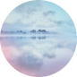
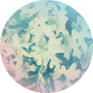
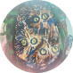
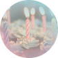

| DREAM TIPS ゆうべ見た夢の翻訳ができる本 (plexlibrary) | |
| 渡辺麻利江 | |
| アンバーノートワークス プレックスライブラリー (2017) | |
DREAM TIPS ゆうべ見た夢の翻訳ができる本
渡辺麻利江
はじめに
この本を手にとっていただいてありがとうございます。
夢分析ヒーリングアドバイザーの渡辺麻利江です。私はこの世界に入って早くも２０年。女性誌の占い特集やメールマガジンなどで、ときどき夢分析に関するコラムや記事を書かせていただいたりしています。
私は主に｢夢が人に与える癒やしの効果｣について長年勉強してきました。といっても、この世界は無限です。まだまだ勉強中で、もっぱら分析語彙､夢のアイテムの収集と吟味は半ば趣味のようにワクワクしながら続けています。
現在、私の夢の辞書データは２万２０００のアイテムデータが更新されて続けています。これはたくさんの方の夢を分析させていただいたおかげです。
特に海外には非常に参考になる夢事典､夢分析の研究書があり、それらを見つけるのも楽しみのひとつです。宗教的な意味の偏りがあるのですが、それらを勉強することで、今までの見解とは別の視点で夢を翻訳するヒントも多々見つかるからです。問題は、それらを私たち日本人の感覚にどう落とし込 むか...なのですが。これがなかなか難しい...（笑）。
と、そんなわけで、みなさんも楽しみながら、ラフな気持ちで夢の世界におつきあいください。
夢のアイテムはさまざまな助言を与えてくれます。悩みやトラブルの解決方法、あなたがとるべき進路、感情コントロールの必要性など、夢はあなたの状態を的確に伝えてくれる､大変便利なツールです。
それでは、みなさんが夢からのメッセージを受け取るヒントを､さっそくご案内していきましょう。
第１章 夢が教えてくれること

一見突拍子のない夢のストーリーにも、隠されたメッセージがあります。
夢はいろんな映像で、あなたがその真意を理解できるまで、同じ「メッセージ」を送っています。そして、あなたが夢の意味を理解できれば、｢おめでとう、あなたはちゃんと学んでくれたんだね｣と、再び夢を使って知らせてきます。
同じ夢であっても、そこに出てくるアイテムによって、夢の翻訳は変化します。たとえば100人の人が同じアイテムの夢を見たとしても、その意味は完全に100通り。それが夢のすごいところです。無意識の創造力は本当に素晴らしいと思うばかりです。
夢の中に思い出したくない過去や人物が出てきたり、夢のストーリーが不条理の連続で大変つらいこともあると思います。そういう夢を見てしまうと、きっと憂鬱で寝覚めの気分も最悪ですよね。しかし、実はそういった夢こそ大切なメッセージを伝えているのです。不愉快な夢でも、翻訳すると必ずしもマイナスな意味を持つとは限らず、それどころかとても良い夢である場合が多々あるのです。そして不思議なのは、夢のメッセージが理解できると気分の悪さは嘘のように消え、ちょっとした感動に変わるのです 。これこそが｢夢の学び｣の醍醐味です。
●夢からの伝言
夢の通訳をしていると、夢はつくづくオーダーメイドだと思います。その人の人生、その人の考え、意識、そして変化と柔軟性。それが手に取るようにわかります。
夢の通訳とは、たとえば英語を覚えるように語彙を増やし、アイテムに隠された意味を探し出す作業です。夢の解釈の語彙が増え、自分自身の人生とリンクさせると、そこに明確なメッセージが浮き上がってきます。
たとえば私は、忙しくなるとよく仕事の夢を見ることがあります。夢の中でも昼間と同じように働いていて、何だか２４時間働いたような、損した気分になってしまいますよね。締切りに追われて緊張する年度末などに、よく見ます。
これは就職や転職をしたばかりの方も比較的よく見る夢のようです。慣れない職場で緊張が続いているのでしょう。この夢を見るときは少し息抜きが必要です。
夢は、私たちにとって重要なメッセージであればあるほど独創的で衝撃的な物語や映像を創り送って来ます。奇抜な設定の夢、まるで映画のように壮大なドラマの夢、怖くて震え上がるような夢などがそうです。夢はそうやってあなたに強烈な印象を残し、隠された伝言に気づいてもらえるのを待っているのです。そこには、今のあなたが気づかなかった問題の解決法や斬新なアイデア、癒し、警告、励ましなどが託されています。
何度も同じ夢を見るリピート夢も、やはり重要度の高いメッセージのサインです。あなたに気づいてもらいたくて、夢は何度も同じアイテムであなたにアピールしているといえるでしょう。
●夢で心のバランスをチェックする方法
前向きな時期、優柔不断な時期。仕事に振り回されたり、家事や学校の用事が次々と重なったり、何だか精神的にバランスを崩しそうなることってありますよね。
私たちはもともと陰と陽、右脳と左脳でバランスをとりながら生きています。少々のアンバランスは自然に補正されるのですが、傾きすぎると気分が落ち込んだり、見切り発車となったり、極端になりがちです。
夢で、現在の自分自身のバランス状態をチェックできる方法はたくさんありますが、中でもいちばん簡単なのは、夢に出てきた人物が｢男性｣か｢女性｣かで知る方法です。
夢に出てくる人物は、ほとんどの場合が自分自身の側面をあらわします。見知らぬ人が出てくる夢を見たことはありませんか？ 一人でしょうか、それとも大勢いたのでしょうか。そこにいた人々が、今のあなたのバランスをあらわしている場合があります。
＊夢の中の男性＊
あなたが本来持っている｢男性的な側面｣。勇気、挑戦心、知性、責任感、目的達成力、論理性、洞察力、集中力。今、あなたにそういったパワーが蓄積されいることをあらわします。
＊夢の中の女性＊
あなたが本来持っている｢女性的な側面｣。愛情、思いやり、優しさ、情緒、慈しみ、直感、いたわり深さなど。そういったパワーが蓄積されていることをあらわします。
もちろん、これはあなたが女性であろうと､男性であろうと、どちらも兼ね備えているということです。
なので、夢の中に男性ばかり、あるいは女性ばかりが次々出てくるときは、現在のあなたの精神的、あるいは考え方のバランスがどちらかに傾きつつあるな、と考えてください。
もし、夢の中に男性が多く出てくる場合は、パワーを活かして一気に目標に近づくことが可能です。どのようなことも、企画、戦略を立てて着実に前進できる時期でしょう。しかし、やる気が溢れるあまり日常生活でつい、攻撃的、独断的になりがちです。思いやりの気持ちを忘れずにいてください。
夢に女性が多い場合は、創造力を活かして感性により磨きをかけることが可能です。アイデアのひらめきも高まる時期です。ただし、感情的になりがちです。常に客観的な冷静さを失わないようにしていてください。
この他に、自分の状態を把握しやすい夢は、笑ったり､泣いたりする夢です。夢の中で大笑いして、自分の声で目が覚めたことはないでしょうか。または、悲しい夢を見て泣きながら目覚めることは？。
目覚めたときに、何とも言えない気持ちになる｢楽しい夢｣と｢悲しい夢｣。これはどちらも、あなたが心の葛藤を昇華してバランスをとろうとしているときに見る夢です。
＊笑う夢＊
実は、人生のつらいときになぜか見ることが多い夢です。この夢は、あなたの中にあった｢寂しさ｣や｢悲しみ｣などのネガティブな感情を昇華していることをあらわします。あなたに｢負けるな｣と伝える夢のメッセージそのものです。この夢を見た後は過度な緊張が消え、精神的な余裕が生まれてくるでしょう。目覚めたとき｢ああ､楽しい夢だった！｣と思う朝。その笑顔を力に変えてください。
＊泣く夢＊
悲しい夢で涙を流すのは、あなたが心の奥でじっと我慢していた悲しみをうまく発散させたことをあらわします。あなたが過去に受けた心の傷が癒えるまで、同じ夢を何度も見ることもあるようです。しかし夢は、それであなたを悲しみから解放させようとしているのです。ですから思いっきり泣きましょう。やがて感情は浄化され、あなたは癒やされます。
夢は、あなたが日常生活で気づかない微妙な精神、身体、感情などのバランスを､いち早く察知しています。
そして、それをあなたに伝え続け、エールを送り続けているのです。
比較的覚えておきやすいこれらの夢。
夢を見たときはメッセージの意味を考えてみてくださいね。
第２章 夢のアイテムと意味

●夢の中の自分
夢の中に、あなた自身が出てくることはないですか？ これは夢の世界ではよくあることなのです。遠くから俯瞰で大勢の中にいる自分自身を見ていたり、あるいはあなたの視点のままで行動していることもあるでしょう。もうひとりの自分に出会い、勇気を出して自分自身に話しかけることもあると思います。
夢の中でもう一人の自分と出会うのは、あなたが自分自身を客観的に見つめ直し、理想に向けて軌道修正をはかる時期にいることをあらわします。そして、その時期の夢は、あなたの今後の人生に役立つアイデアやヒントが隠されていることが多いのです。だから、もし夢の中に自分自身が出てきたら、以下のことをチェックしてみましょう。
夢の中に出てきたあなたは、どんな印象でしたか？
明るい感じの人でしょうか、暗い感じの人でしょうか。
外見はどうでしたか。どんな服を着て、どんな体型だったでしょうか。あなたが気づいたことが、メッセージの大切な要素になるでしょう。なぜなら、夢の中の自分には、現実のあなたが｢自分自身に対して感じているイメージや評価｣がそのまま反映されているからです。
夢の中の自分に声をかけたり、親しくしようとしているなら、ば、あなたは自ら進んで自分を知ろう、愛そうとしていることをあらわします。きっとあなたは自分に誇りをもっているはずです。
逆に、夢の中の自分を怖がったり､隠れたり逃げ回ったりしている場合は、まだ自分の本心を知る勇気が持てずにいることをあらわします。もっと自信をもって、自分と向き合う勇気が必要です。
夢の中の誰かが言った印象的な言葉は、あなたにとって大変重要なメッセージのこともあります。意味不明であっても、起きたときに覚えていたらノートに書き付けておくといいでしょう。後で｢ああ、あれはこのことだったのか｣とわかる日が来るかもしれません。
他にも、夢の中の場所や、自分が何をしていたか、ほかにどんなアイテムがあったかなど、そういったものをパズルのように組み合わせることで、夢の伝言はより具体的になっていくでしょう。
自分自身が出てくる夢は､自分の中の｢自分の評価｣を知るチャンスです。この夢をきっかけにして、思いも寄らぬ方向転換が来るかもしれません。精神的にも大きく成長できる時期です。夢のメッセージに注目していてくださいね。
それでは次の章では「夢のアイテムとその意味｣をどんどんご紹介していきましょう。
●よく見るあの夢の意味は？
｢あれ？！私も同じ夢を見たことあります！｣という人が多い夢もあります。たとえば、｢歯が抜ける｣｢髪が抜ける｣｢クルマを運転する｣｢誰かに追われる｣など。多分あなたも一度は見たことがあるのではないでしょうか。
夢の中と現実に落差があればあるほど、その夢のメッセージは重要度が高くなります。たとえば、免許をもっていないのに夢の中でクルマを上手に運転していたり、夏なのに｢お正月｣の夢を見たり、誕生日ではないのに夢の中で盛大にお祝いをしていたり...そのようなギャップの激しい夢ほど､貴重なメッセージが託されているのです。
｢ゆうべはなぜ、あんな夢を見たのかな？｣ と思ったときこそ、夢の意味を調べるチャンスですよ。それではみなさんがよく見る夢の意味をご紹介していきましょう。
＊運転の夢＊
夢の中でクルマを運転すると、快適なとき、そうでないときの差がすごくないですか？ 何回やり直してもうまく駐車できなかったり、ブレーキが効かない、曲がりきれない。事故を起こすなど、ひやひやすることも多いものですよね。
夢の中であなたがクルマをうまく運転しているなら、理性と感情のバランスがとれていて、現状をコントロールできていることをあらわします。逆に事故を起こしたり、うまく運転できない場合は、行動や考え方がまだ未熟で、現実にうまく対処できない部分があることをあらわします。
＊追われる夢＊
何かの問題が差し迫っていたり、切羽詰まった状況に置かれて不安を感じているときに見る夢です。追いかけてくるのが誰なのかによってもかなり意味合いが違ってきます。異性に追いかけられるなら、恋愛に関する過去の心の傷であることも。得体の知れない何かに追われるのは、過去の嫌な経験やトラウマがあるのかもしれません。いずれにしても、この夢を見たら、コンプレックスやトラウマを克服しなさいというメッセージです。つらい作業ですが、怖がらず乗りこえましょう。そうすれば必ず新しいチャンスがやってきます。
＊学校の夢＊
｢もうずいぶん前に卒業したのに、どうして今頃学校の夢を見るの？｣と不思議に思うかもしれませんが、学校の夢は、その時代に経験した心理的､感情的なことを再度学習し直していることをあらわします。 学生時代のさまざまな想い出から、まさに何らかのエネルギーやヒントを得ようとしているのでしょう。夢の中に出てくる学校の建物や人間関係は現在のあなた自身をあらわしています。
＊髪が抜ける夢＊
髪が抜けるのは、今までの自分から脱皮しようとする心の動きをあらわすことで、悪い夢ではありません。ただし、大切な何かを失う不安感をあらわす意味もあり、そういった場合は心身のバランスを整え、気分転換する必要があるでしょう。
＊戦争の夢＊
心理的な葛藤や混乱、興奮状態に陥ったときによく見る夢です。自分の側面を拒否してバランスを崩している状態かもしれません。戦争の夢は、｢落ち着いて対処しなさい、恐れず、冷静に判断するように｣というメッセージです。死者はあなたに必要が無くなった信念や考え方をあらわします。夢の中で死体を見たならば、あなたは新しい考えを取り入れ、心理的変化をするということです。戦場で逃げ惑っているならば、現実の問題にまだ対処できず葛藤中であることをあらわします。
＊空を飛ぶ夢＊
夢の中で、すべてを解放した状態です。夢の中のあなたと、現実のあなた自身が一体化した状態とでもいえばよいでしょうか。気持ちよく飛んでいるなら、あなたがリラックスしているということです。ただし、不安定な飛行状態なら｢心の中の抑圧や不安を解消しなさい｣というメッセージですよ。
＊天井が迫ってくる夢＊
体調がすぐれないとき、心身のバランスが崩れそうなときに見ることが多い夢です。精神的なプレッシャーを抱えた状態をあらわします。｢ひとりで抱えきれないことは、誰かに頼ったり甘えたりしてもいいんですよ｣というメッセージです。
＊眠る夢＊
起きなきゃいけないのに、眠くて起きることができない夢。これは、あなたがちょっと現実逃避したい気持ちをあらわします。生活がマンネリ気味なのかもしれません。何より心身共に消耗しています。この夢を見たときは、現実生活で疲れを貯めないよう休養したり、うまく気分転換をして停滞したあなたのエネルギーを上げていきましょう。
＊歯が抜ける夢＊
歯が抜けたり、欠けたりする夢は日常生活で抱えている不安をあらわします。問題解決の方法がわからず、無力感を味わっているときにもよく見る夢です。この夢を見たときは、すすんで抱えている問題に積極的に取り組んでみてください。この夢の違和感は独特で、起きた後も夢をよく覚えていられるでしょう。それだけ重要なメッセージです。
＊裸になる夢＊
｢気がつくとみんなの前で私だけが裸！？｣ とっても焦る夢ですが、これは悪い夢ではありません。現実世界のあなたが素直で、自分自身を飾ることなく、偽らずに人生に向き合っているということ。夢からの祝福メッセージなんですよ。
●あなたを励ます夢アイテム

目標に向かってがんばっていても、うまくいかなくて弱気になることだってありますよね。迷ったり、足踏み状態になっているときこそ、夢のメッセージを活用してください。ここではあなたを励ます夢のアイテムをご紹介します。
＊歩く＊
この夢は、あなたの精神状態や健康状態をいち早く教えてくれるものです。あなたがゆったりと歩いているなら、自信をもって目標に向かい着実に前進していることをあらわします。足がふらふらしたり、動かなくなるなら､心身共にエネルギー不足の状態をあらわします。再度、生活を見直してみてください。
＊歌う＊
今のあなたは心身共に穏やかで調和しているということをあらわします。気持ちよく歌っているならば、人生に新たな良い展開が訪れるでしょう。美しい音楽や歌声が聞こえてくるならば、今手がけているものごとは順調に進み、良い結果を出すことができる時期です。
＊踊る＊
あなたの中に充実したエネルギーが満ちあふれていることをあらわします。何かをやり遂げたい、達成したいという情熱が高まっています。この力をプラスに活かして成果をあげられる時期です。
＊泳ぐ＊
感情面でたくさんの学びを得ています。気持ちよく泳いでいるなら情緒が安定し、やる気に満ちあふれていること。新しいアイデアが浮かびやすい状態でしょう。水面が波打った場所で苦労して泳いでいるなら、自分自身の感情の波に立ち向かおうとしていることをあらわします。
＊階段＊
階段を上る夢は｢大丈夫、目標に向かって向いて進んでいます｣というメッセージ。周囲の雑音にまどわされず、信念を貫いてください。逆に階段を降りているなら、少々弱気になっていることです。勇気を出して、目標に向かって気を引き締めて向かっていきましょう。
＊傘＊
傘をさしているなら、自分を激しい感情から守り、上手にコントロールできていることをあらわします。傘を持っているなら、自分に対する外敵をうまく回避し、感情を揺さぶられない強さを学ぼうとしているところです。傘が大きいほど、心の安定も上がっていきます。
＊ドアを開ける＊
新しい自分を発見する時期が来ます。意外な才能が開花するかもしれません。今こそやりたかったことを実行しましょう。ドアの向こうに人がいるなら、現実世界にあなたに手を貸してくれる人物が現れることを意味します。夢の中にドアが出てきたら、迷わず開けてみることです。
＊虹＊
とても良い夢です。あなたが潜在的に持つあらゆる可能性が開花していくでしょう。興味があるものには恐れず挑戦してください。あなたの努力は必ず実ります。
＊旅行＊
旅の夢は、あなたが精神的に日々な学びを得ていることをあらわします。観察力、洞察、ものの見方を無意識に学んでいるのです。この夢を見たら、眠っていた自分の意外な才能に気づくかもしれません。
あなたの中に眠っているあらゆる夢のパワーを人生に有効に活かしてくださいね。
では次は、これも比較的見ることが多い｢家｣に関するアイテムを見ていきましょう。
●｢家の夢｣でわかる自分自身のこと
夢の中で見知らぬ家にいたことはありませんか。夢に出てくる家はあなたの自己イメージの投影です。そして、夢の中の家の印象は、あなたの自己評価そのものです。
家はあなたが現在置かれている心理状態をあらわしますので、現実の世界のように一定ではなく、あるときは豪華なお屋敷だったり、また山小屋のようだったり、廃屋だったり、さまざまなことでしょう。｢家の夢｣は、その時期のあなたが自分に対してどのような評価を下しているかがわかる最適なアイテムです。
＊家の広さと状態＊
広い家は、自分自身を深く掘り下げ、隠された才能を探っていることをあらわします。狭い家は現在の環境に､何らかの行き詰まりを感じていること、変化の必要性をあらわします。
壊れた家は、あなたが過去の体験による痛手からまだ立ち直れないでいるか、あるいは実際に体調を崩しそうになっていることへの軽い警告です。しかし、夢の中で家を修理したり、掃除しているならば、あなたは自分を認めている、前向きな成長を始めたことをあらわします。
家の中の状態はどうでしたか？ 片付いた部屋は、あなたが冷静に状況判断をして、何事にもうまく対処できていることをあらわします。乱雑に散らかった部屋は｢心の中から不必要な情報や執着、古い価値観を一掃しなさい｣というメッセージです。それらが現実でもあなたの心を混乱させ、前進をさまたげていることをあらわします。
＊庭＊
庭はあなたと社会や周囲の人々との関係性をあらわします。よく手入れされた庭は、あなたが十分に自分を評価していることをあらわします。逆に荒れた庭は、今一度自分を振り返り、もっと自己評価を上げる必要があることをあらわします。
＊リビング、キッチン＊
夢の中のリビングで起こる出来事は、人とのコミュニケーションに関する自己評価です。主にあなたの対人関係についての状況をあらわします。また、夢の中のキッチンでは、あなたが目標に向かってどのように努力しているかがわかります。
＊寝室＊
夢の中に寝室が出てくるときは、現実生活であなたが疲労しすぎていること、休息を必要としていることをあらわします。寝室で起こる出来事は、あなたが自分自身とどのように接しているかをあらわします。
＊バスルーム、トイレ＊
過去の不必要な情報や思い出、考え方などを今すぐ捨て去り、浄化する必要があることをあらわします。お風呂に入ったり、シャワーを浴びたり、トイレで用を足すのは、あなたが執着を手放し、自分自身と向き合っていることをあらわします。
ところが、逆にそれが困難な夢もよく見るものです。お風呂やシャワーが壊れていたり、トイレを探すけど見つからない、など。こういった夢を見たら｢いろいろなことに執着するのをやめて、気分転換しなさい｣というメッセージだと覚えておいてくださいね。
●ホテルや寮に住んでいる夢
夢の中で、家ではなくホテルや寮などに住んでいることもあるものです。その外観や状態は、家の夢と同じく､あなた自身の自己イメージをあらわします。その上でそれぞれの特徴的なメッセージが含まれています。
＊ホテル＊
一流のホテルなら、あなたが精神的に安定し､自信を持って人生を謳歌していることをあらわします。その調子で着実に前に進んでください。さびれたホテルは、あなたが自信を失っている状態をあらわします。自分自身のことを再度見直し、メンテナンスする時期です。
＊寮＊
今のあなたは人間関係から何かを学び取っている最中です。日常で多くの人と接していて、気が休まらないこともあるのではないでしょうか。人付き合いがわずらわしくなる前に、ひとりで静かな時間を過ごすことも大切ですよ。アパートなども同じ意味です。どちらも、建物の雰囲気や、住んでいる男性、女性の数などで持つ意味が明確になっていきます。
いかがでしたか。家の中にどのようなアイテムがあったのか、細かく覚えておくと、あなたに必要なヒントがより具体的にわかるようになると思います。
●｢怖い夢｣にも意味がある

恐怖映画のような夢、目が覚めると心底ホッとする怖い夢ってありますよね。
しかし、どうして突然そんな夢を見るのでしょう。
実は怖い夢は、あなたが避けているコンプレックスや不満を教えてくれているのです。
あなたが勇気を出して克服を決意すれば大きな転機が訪れる、前向きなメッセージでもあるのです。
それでは「怖い夢」に出てくるアイテムの意味を御紹介しましょう。
＊暗闇＊
あなたの意識の底から、何か未知なものが浮かび上がってきます。しかし、あなたは学ぶのを避けているため、手探りで対処しているようです。見逃していることに､大きなヒントがあることも多いのです。これは、｢あきらめたり、途中放棄していることにもう一度注目してごらん｣というメッセージです。
＊殺される＊
精神的な疲労感の強さをあらわします。流血しているなら更に消耗が激しいこと。この夢は｢行動の前に、心身をしっかり休ませる時期｣というメッセージです。ただし、この夢は古くなった自分を捨てて、新しい自分へとバージョンアップする意味があり､悪い夢ではありませんので安心してください。
＊怖い･恐怖＊
あなたが認めたくないコンプレックスや不安をあらわします。同じパターンの怖い夢を繰り返し見るならば、あなたが克服しなくてはならない｢頑なな思い込み｣を暗示しています。自分を信じて愛情を注ぎましょう。自己評価が上がれば、心の中の恐れもなくなります。
＊怪物・怪獣＊
不安や心配が姿を変えたものです。怖ければ怖いほどネガティブな感情が強くなっていることをあらわします。こういった夢を見たら、しっかり観察してみることですよ。怪物や怪獣はあなた自身。否定的な考えを捨て、恐れを解除できれば、あなたはもっと自由になれるでしょう。
＊骸骨＊
困ったことに今のあなたは精神的に疲れ切っています。生き生きした感情が消え、心の中がからっぽです。この夢を見たときは、マンネリや無関心な態度とは縁を切りましょう。｢新しいものを見て、聴いて、笑って、感動する心を持ちなさい｣という夢からのメッセージです。
＊崖＊
崖から落ちる夢を見るときは、精神的にも感情的にも冷静さを失っていることへの警告です。誰かに崖から落とされそうになっているなら、何かを決断する時期にきていることをあらわします。落とされて自分が死んでしまったのなら大丈夫、あなたは心機一転、古い殻を脱ぎ捨てて新しいスタートが切れるというメッセージです。落とされて怪我をして流血しているなら...あなたは混乱して消耗しすぎているということへの警告です。冷静さをとりもどし、自分をもっと大事にメンテナンスしてください。
＊事故＊
心の中にさまざまな不安を抱えているときによく見る夢です。もしかしたら過去に受けた心理的な痛手がまだ癒えていないのかもしれません。人間関係への不安感､不信感がある場合も。この夢は｢周囲にばかり気を取られず、自分自身のことに十分気を配っていてください｣というメッセージです。不安感を解消し、そこから自由になりましょう。
＊死体＊
あなたにとって不要になった考え方や価値観をあらわします。死体を見るのは、あなたは古い自分を脱皮したのだと考えてください。この夢は、｢あなたが新しい視野を得た｣というメッセージです。これらの夢は不安感がありますが、今後新しい展開が期待できるよい夢です。
＊墓地＊
過去を懐かしむ気持ちをあらわします。 あなたの心の中に､何らかの寂しさが芽生えているのかもしれません。この夢を見たら、古いアルバムを眺めたり、昔の手帳やノートを開く時間を大切にしてください。そうすることで変化の糸口、アイデアが見つかるかもしれません。
＊幽霊＊
まだ理解不能なあなたの側面をあらわします。恐れずに立ち向かえば、それは単なるあなた自身の姿だとわかります。幽霊の夢は、｢怖がらず、勇気をもって自分のやりたいことに挑戦し、可能性を開花させなさい｣というメッセージです。また、実際に亡くなった人が夢に現れた場合は、あなたがまだその人の死をどこか受け入れられないままでいることをあらわします。しかし、会いたかった故人に、夢で会えると嬉しいものですよね。その気持ちはあなたへのギフトです。どうか大切にしてくださいね。
｢ああ、夢で良かった｣とホッとする夢。怖い夢はインパクトが強烈ですが、その分、学ぶべきところの多い夢なのです。夢のメッセージに従って自分の内面を見つめれば、弱点も必ず克服できるようになるでしょう。
●見たらハッピー イベントの夢

結婚式、誕生日、入学式やクリスマス、お正月など、特別なイベントの夢を見るときは、あなたに新しいチャンスが近づいているしるしです。これらの夢は、あなたが無意識に夢からのメッセージを受け取り、あなたに必要な学習を終えたことをあらわします。まさに、｢おめでとう、よくやったね。これからもがんばってね｣という夢からの祝福のメッセージです。
＊結婚式＊
結婚相手が誰かに関わらず、この夢はあなた自身の精神的･身体的バランスが最適であることをあらわします。相手が顔見しりの場合は、実際にあなたが認めている､その人の長所のこともあるでしょう。いずれにしても、あなたの中の葛藤は昇華され、人生にワクワクするような新しい展開が始まります。
＊誕生日＊
実際の誕生日じゃないのになぜかお祝いしている夢、あるいは誰かの誕生日を祝う夢。これらは｢いよいよあなたのターニングポイントが来ましたよ｣というメッセージです。新しいことにどんどん挑戦し、素敵な経験を重ねて行きましょう。
＊お葬式＊
もうじき苦しい時期を抜け、明るい変化を迎えます。古い価値観や悲しみは消え、前向きなエネルギーが満ちてくるでしょう。悩みや問題は解決へのチャンスがやってきます。
＊パーティ＊
あなたが心の奥で人知れず学習していたことが終了し、あなたの財産になったことをあらわします。どのようなパーティーでも、それはあなたの魂の成長を祝福するメッセージです。
＊卒業式･入学式＊
心の中の乗り越えるべき葛藤をひとつ昇華したことをあらわします。この夢は、あなたが次の成長･課題に向けて取り組むことへのエール。新しい興味や、挑戦の勇気が次々に湧いてくるでしょう。
＊お祭り＊
日常でストレスを感じているようです。無理したり背伸びせず、もっと人生を楽しんでいいよという夢からのメッセージです。肩の力を抜くことで、新しい転機がやってきます。
●注意が必要な夢
夢はあなたの深層心理の危機感をストレートに伝えることも得意です。たとえば無意識に怒りやストレスで爆発しそうになっているとき、身体を壊しそうになっているとき、夢は即座に警告メッセージを発信してきます。
ここでは比較的みなさんがよく見る"警告"アイテムと、それらの夢を見たときの対処法を御紹介しましょう。
＊悪事･犯罪＊
夢の中で悪事を働いたり、犯罪に手を染めているなら、あなた 自身の最も脆弱な側面が表面化しようとしていることへの警告です。あなたの中に眠る可能性を､自らせばめている状態です。
この夢を見たら、わがままな考えを捨て、自らの心をもっと成長させましょう。 自分をしっかり律して、輝いてくださいね。
＊おぼれる＊
NOと言えずあれもこれも引き受けてしまっていたり、本心を抑制しすぎて感情的に重くなりすぎています。｢自分をもっと大切にしなさい｣という警告メッセージです。
この夢を見たら、少し日常をスピードダウンしましょう。本音で自分や周囲の人と向き合いましょう。
＊火事＊
精神的に追い詰められているようです。または、心が怒りや自己否定などネガティブな気持ちにとらわれているという警告です。火事の規模が大きいほど、あなたが冷静さを失っていることをあらわします。黒煙などで視界が遮られる状態なら、感情的な暴言や暴走にも注意が必要です。
この夢を見たら自分を追い詰め過ぎていないか振り返ることです。ストレスを発散し、ものごとを前向きに明るく捉える努力を忘れないでいてください。
＊ケガ＊
この夢は、不必要なものにエネルギーを浪費し、関わらなくてもよいことに振り回されて消耗している状態をあらわします。この夢を見たら､現実に自分が何かに振り回されていないか、仕事や家事、人間関係など自分の生活を再点検してみましょう。出血は自分の中からエネルギーが漏れ出していることです。出血の程度であなたの消耗具合がわかりますので目安にしてください。
＊叫ぶ＊
心の中に抑圧した不満、怒り、不安が爆発しそうになっていることへの警告です。あなた自身が発したSOSのサインだと思ってよいでしょう。
この夢を見たら自分の生活や言動や行動すべてに注意を払い、無理をせず必要なときには誰かに助けてもらいましょう。心身共に壊れてしまう前に十分な休養をとってください。そして自然と接することで、ストレスの発散を心がけてくださいね。
＊爆発＊
我慢を重ねてきた感情が、暴発状態になっています。抑圧された感情や身体症状が破壊的な形で表面化しそうになっていることへの警告です。
この夢を見たら、溜まりすぎたストレスをしっかり発散させてください。身体は極度な緊張状態にあるので、十分にいたわってください。何事にも冷静に対処してトラブルを解消して行きましょう。
＊病気＊
心の中、あるいは身体に不調和が起きていることに対する警告です。ストレスを抱え過ぎてバランスを崩す寸前であることをあらわします。
この夢を見たら、まずはネガティブな考えを手放すこと。ものごとの明るい部分､長所に目を向ける努力をして行きましょう。実際に体調がすぐれないなら、病院へ行き、検査を受けるチャンスかもしれませんよ。
＊落下＊
心の中に、失敗やつまづきに対する不安や怖れがあるときに見る夢です。高い位置から落下するほど不安が大きいことをあらわします。自己過信や、身の丈に合っていない計画などに対する警告です。
この夢を見たら、今の計画に無理がないかどうか、もう一度確認してみてくださいね。
＊毒＊
不安や恐怖心で心の中がネガティブ一色になっているときに出てくるアイテムです。毒を飲んだり、手にしたりするのは、自己嫌悪への警告です。
この夢を見たら、自分をもっと愛しましょう。あなたを苦しませることへの執着を手放すことです。落ちついて内省する時間を持ちましょう。
いかがでしょうか。
夢の警告は現実のアンラッキーな出来事を未然に防ぐためにも、十分役立ちます。ぜひ覚えていてくださいね。
第3章 夢見のコツと翻訳の具体例
せっかくいい夢を見ても、目覚めると同時に忘れてしまっていることが多いですよね。
夢は断片的な物語も多いので、内容が飛び飛びでとても覚えていられないこともあります。どんなに鮮やかな夢の記憶も、そのままではどんどん消えていきます。ですから、夢は目覚めて覚えているうちに、すぐにメモしておくことをおすすめします。
夢を記録するには、なるべくシンプルな方法がいいでしょう。慣れているならレコーダーアプリや音声テキスト化アプリなどで声を記録しておくのもいいですね。しかし、使い慣れないうちは、アプリを開いて、ボタンを押してという｢工程｣に気が散ってしまい、肝心の夢の中身を忘れてしまうこともあるものです。ですからやはり、慣れるまでは枕元にノートとペンを置いておくのが最もシンプルで確実です。
朝、寝ぼけながら夢を書きつけていると、手に力も入らないし、だいたい文字はぐちゃぐちゃになりますので、筆圧が弱くてもはっきり読めるように、鉛筆やシャーペンではなくサインペンがおすすめです。ノートは大きめのスケッチブックなどをおすすめします。言葉で説明できない部分は簡単にイラストにしておけば、あとでチェックもしやすいですよ。
複雑すぎて記録できない夢は、無理せずそのまま逃がしてて夢の次なるアプローチを待ちましょう。夢はいつかまた別の映像で、あなたが逃がした夢と｢同じメッセージ｣を送ってきます。本当に不思議ですよね。
●就寝前と目覚めの刺激を避ける
夢をよく覚えておくために大切なのは、就寝前や目覚めの刺激を避けることです。夢の記憶はとても繊細です。ちょっとした刺激で記憶からきれいさっぱり消えてしまいます。長い間、夢に慣れ親しんだ私でさえそうなんです。
特に目覚まし時計の音は厳禁です。夢の残像が頭の中から吹き飛んでしまいます。フェードイン機能のついた目覚ましで、そっと穏やかに目覚めたいものです。これなら夢も多少は忘れにくいと思います。
就寝前の1、2時間ほどは、できれば静かに心を落ちつかせて過ごしてください。テレビや映画、スマホなどを見ながら眠りに落ちると、睡眠の質も悪くなります。直前まで見ていたものが､夢に干渉します。たとえば深夜のドラマを見てそのまま眠ってしまい、一晩中そのドラマの夢を見たという経験、きっと誰もがあるのではないでしょうか。それは｢干渉夢｣といって、翻訳してもほとんど意味を持ちません。
夢という自分自身からのメッセージを受け取りたいときには、就寝前はゆっくり静かに過ごしてみてください。お気に入りの絵本や美しい風景などの写真集を眺めて過ごすのもおすすめです。 ゆったりと、夢に思いをはせながら眠りにつきましょう。
●夢の翻訳具体例
私が今も覚えているのは26歳の誕生日に見た夢のことです。私の前に見知らぬ老婆が現れ、こう言いました。
｢汚れた水の中にいると体に毒が溜まってしまうよ｣。
あまりにリアルだったので、そこでハッと目が覚めました。
当時の私は怪我をして動けず、仕事ができない状態に陥っていました。あのときの将来への不安と恐れといったらありません。｢なぜ自分だけがこんな目に遭うのか｣という焦りや嫉妬にも似た気持ちで、毎日どんよりしていたものでした。ですから、誕生日に夢に出てきた見知らぬ老婆のメッセージは、とても気になりました。
まだ夢分析に興味を持って間もない頃ですので、夢の意味を探るのに時間がかかりました。
｢お風呂とか、プールとか、飲み水が体に悪いということかしら｣などと思いながらメモしたことを覚えています。それを後に翻訳してみると、こういう意味でした。
＊老婆＊
見知らぬ老人は、あなた自身の人生経験を積んできた側面。あなたの感情や行動がマンネリになっているという警告の側面もあります。
＊水＊
水は感情の持つパワー、エネルギーをあらわします。夢の中に水が出てきたら、それが澄んでいるか、にごっているか、よどみがあるか､荒々しいかなど、いろいろな面から現在の自分の感情の状態がわかります。
＊身体＊
自分自身のこと。まだ表面化されていない側面、実際の自分の多様な側面をあらわします。
＊毒＊
自分を痛めつけるマイナス思考。恐れと批判、不安などに心が支配されていることをあらわします。
何となく、おわかりになったのではないでしょうか。｢汚れた水の中にいると体に毒が溜まってしまうよ｣ という言葉の意味は、｢ネガティブな感情を当たり前にしていると、いつまでたっても身体は良くならないよ｣ というメッセージだったのです。これがわかったとき、あの怖い老婆に感謝の気持ちがわいてきたものでした。
それでは最後に、実際の夢の翻訳例をご紹介しましょう。これは以前プレミアムメルマガの夢分析募集に投稿してくださった方の夢の翻訳です。
●捨て犬の夢
外を歩いていると子犬が捨てられています。飼い主の姿はなく、どうしようと迷っているとほかにも３匹出てきて私の方にすり寄ってきました。私は携帯電話で父に相談しようとしていますが、4匹の子犬を抱えて電話を取り出すこともできませんでした。 （hakoさん）
それでは、hakoさんの夢のアイテムを見ていきましょう。この説明はhakoさんの夢に特化しています。これらの意味は、すべての方に当てはまる解釈とは若干異なりますのでご了承ください。
＊ 子犬 ＊
あなたの潜在意識で新たに生まれた男性的な側面をあらわします。
＊数字の４＊
この夢の場合はあなたの中の秩序や、あるいは不要になったものをあらわします。
＊迷う＊
この夢の場合、あなたがまだ自分の人生を見極められないことをあらわします。
＊電話＊
電話がかけられないというこの夢の場合は、精神的な消耗をあらわします。
＊父親＊
この夢の場合は、あなたが理性的な判断や責任感の必要性を感じていることです。
＜夢の翻訳＞
hakoさんの中にバランスのとれた勇気、自立心、責任感などの前向きな気持ちが次々生まれているようです。しかし、今のあなたは女性的に傾いているようです。今はその優しさや感受性の強さが返ってあなたの前進をはばみ、動けなくしているようです。感情の波にそれ以上揺さぶられないよう、リラックスしてください。今のあなたは本音を家族や周囲にうまく伝えられず悩んでいるようです。しかし、勇気を出してそれを乗りこえて行きましょう。コミュニケーションはどんどん良好になっていくでしょう。
この夢は、hakoさんに状況改善のチャンスを教えるメッセージだったようです。
どうぞこの夢を大切にしてくださいね。（渡辺麻利江）
あとがき
いかがでしたか。夢のキーワードは膨大で、一度にご紹介できないのが残念でしたが、夢の世界の楽しさを少しわかっていただけたでしょうか。
夢が私たちに心の奥深くから発信されたメッセージであること。心とからだ、精神のバランスをとるために、夢は大切な役割を果たしてくれていること。そして奇想天外な夢にも、必ず現実の自分と結びつく素晴らしいメッセージが込められていることを知っていただけたと思います。
夢からのメッセージはあなただけの宝物です。その意味を理解すれば、夢はあなたの人生においてかけがえのないカウンセラーとなり、すばらしいナビゲーターになってくれるでしょう。
これからも、夢 の世界を楽しんでくださいね。最後までおつきあいくださりありがとうございました。
またお会いしましょう。
渡辺麻利江
（参考文献）
｢10000DREAMS INTERPRETED or what's in a Dream｣
GUSTAVUS HINDMAN MILLER（著） RAND McNALLY刊
｢最新夢辞典｣ トニー クリスプ（著）相馬寿明(訳) どうぶつ社刊
｢夢事典―現在・過去・未来を占う夢分析｣
トム・チェトウィンド（著） 土田光義（訳）白楊社刊
※本作品の全て、または一部を無断で複製・転載・配信・送信、ホームページやブログ等への転載等を禁止いたします。また本作品の内容を無断で改変改ざん等を行うことを固く禁止いたします。また、お使いになる電子端末により、文字組みや画像に表示の差が認められることがあります。あらかじめご了承ください。
ハートに寄り添う プレックスライブラリーの本のご紹介
｢失恋から立ち直りたいあなたへセレクション（1）｣ (plexlibrary)Kindle版
バンビス･スノーフラワー（著）
つらい失恋から立ち直るためにあなたにできること。『失恋のおくすり』『傷心のおくすり』の著者が贈る、傷心を癒やす20通のメッセージ。http://amzn.to/2kAQVw4
｢失恋から立ち直りたいあなたへ セレクション（2）｣ (plexlibrary) Kindle版
バンビス･スノーフラワー（著）
失恋から立ち直るための20のメッセージ。失恋から遠ざかるための気分転換やリラックスの方法を中心にhttp://amzn.to/2ksQV65
｢いつから地獄（ここ）に: ベンゾジアゼピン処方箋常用量依存症からの脱出｣ Kindle版 渡辺 瑠海 (著)
社会問題になっている病院の処方箋常用量依存。めまい、耳鳴り、幻聴、幻覚、希死念慮の克服。読売新聞でも紹介された離脱症状から回復するまでの壮絶な闘病の記録。http://amzn.to/2kAWv1g
｢愛犬との別れを癒す 静かな名言・名文集 ｣ (plexlibrary) Kindle版 ｂｏｎａ（著）
愛犬を失い、傷ついて言葉を発するのもつらいとき。ここに集めた幾多の名言や、小説、あるいは手記の断片があなたの涙、あなたの心の代弁者となってくれる。ペットロスを癒やす静かな追悼集。
｢ド焦り、ド緊張を鎮圧する方法: 会議･プレゼン･スピーチのピンチを乗り切る 経験者からの使える１００アドバイス｣ (prexlibrary) Kindle版
コーチナス (著)
あがり症、緊張症の人のための必読書。経験者100人による緊張克服アドバイスいろいろ。気持ちがスッと軽くなる。 http://amzn.to/2v7wYm1
｢ライムティーの気まま観察旅 高知のたのしい｢良心市｣めぐり｣
LIME-T（著） Kindle版
高知の路地のあちこちで見かける無人の地場産品販売所｢良心市｣。
素朴でユニークなたたずまい、個性豊かな良心市をご紹介。
これからもプレックスライブラリーの本をどうぞよろしくお願いします。
DREAM TIPS ゆうべ見た夢の翻訳ができる本
渡辺麻利江（夢分析・ヒーリングアドバイザー）
発行 アンバーノートワークス プレックスライブラリー
Copyright©2017 ambernoteWorks All Rights Reserved.